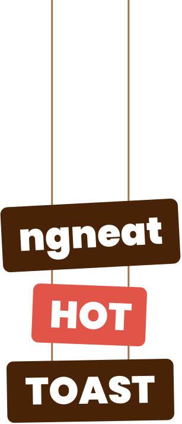

<div class="bg-gradient-to-b from-toast-50 to-white bg-opacity-10">
  <div class="container flex flex-col items-center relative">
    <!-- #region intro -->
    
    <div>
      
    </div>
    <div class="text-center my-12 relative duration-200">
      <h1 class="text-3xl md:text-4xl animate-enter font-bold text-toast-900">The Best Toast in Town.</h1>
      <h2 class="text-xl md:text-2xl font-bold text-toast-600 mt-2">Smoking hot Angular notifications.</h2>
      <h4 class="text-md md:text-lg text-toast-400 mt-2">
        Inspired from
        <a
          class="font-bold text-toast-400 hover:bg-gray-100 hover:text-toast-600 transform"
          href="http://https://react-hot-toast.com/"
          target="_blank"
          rel="noopener noreferrer"
          style="transition-property: background-color, color"
          >React Hot Toast</a
        >
      </h4>
    </div>
    <!-- #endregion -->

    <!-- #region quick buttons -->
    <div class="grid md:grid-cols-2 gap-4 rounded-2xl bg-toast-200 p-4 w-full max-w-lg">
      <button
        [ngClass]="[
          'rounded-lg font-bold gap-4 flex bg-gradient-to-b from-white to-toast-200 shadow-button text-center',
          'py-4 px-6',
          'active:translate-y-0.5 active:shadow-button-active active:bg-gray-100 transform',
          'focus:outline-none focus:ring-4'
        ]"
        style="transition-property: box-shadow, transform"
        (click)="observe()"
      >
        <div>🛎</div>
        <span class="flex-1 mr-2">Make me a toast</span>
      </button>
      <a
        href="https://github.com/ngneat/hot-toast"
        target="_blank"
        rel="noopener noreferrer"
        [ngClass]="[
          'rounded-lg flex font-bold bg-white py-4 px-6 shadow-button  text-toast-800',
          'active:translate-y-0.5 active:shadow-button-active transform'
        ]"
        style="transition-property: box-shadow, transform"
      >
        <div>
          
        </div>
        <span class="flex-1 text-toast-800 text-center">GitHub</span></a
      >
    </div>
    <div class="text-toast-600 my-2">
      <a class="underline" [routerLink]="['/docs']">Documentation</a>
      <span> v{{ version }}</span>
    </div>
    <!-- #endregion -->

    <!-- #region features -->
    <div class="my-12 grid gap-x-8 gap-y-5 grid-cols-2 md:grid-cols-3">
      <ng-container *ngFor="let feature of featureList">
        <div class="flex gap-1 items-center">
          
          <span class="font-bold">{{ feature }}</span>
        </div>
      </ng-container>
    </div>
    <!-- #endregion -->

    <!-- #region first steps -->
    <div class="grid grid-cols-1 md:grid-cols-2 gap-x-4 gap-y-8 my-12">
      <ng-container *ngFor="let step of stepList; let i = index">
        <div [ngClass]="{ 'col-span-1 md:col-span-2': i === 0, 'col-span-1': i > 1 }">
          <div class="flex flex-col gap-1 items-center">
            <div class="h-6 w-6 mb-2 text-sm rounded-full bg-toast-900 text-toast-50 flex items-center justify-center">
              {{ i + 1 }}
            </div>
            <div class="font-bold">{{ step.title }}</div>
            <div class="text-red-700 text-sm mb-2">{{ step.subTitle }}</div>
            <app-code [language]="step.language" class="border border-toast-200 p-4 rounded font-bold bg-white">
              {{ step.code }}
            </app-code>
          </div>
        </div>
      </ng-container>
    </div>
    <!-- #endregion -->

    <!-- #region examples -->
    <div class="w-full max-w-4xl">
      <div class="my-14">
        <h2 class="ml-5 text-2xl font-bold">Examples</h2>
      </div>
    </div>
    <!-- #endregion -->
  </div>
</div>
